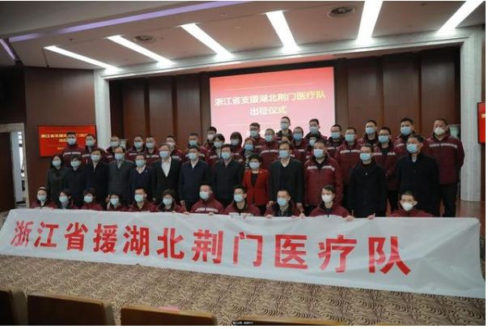
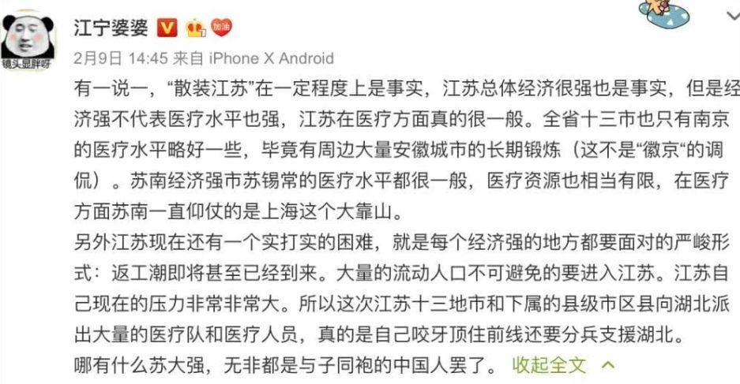
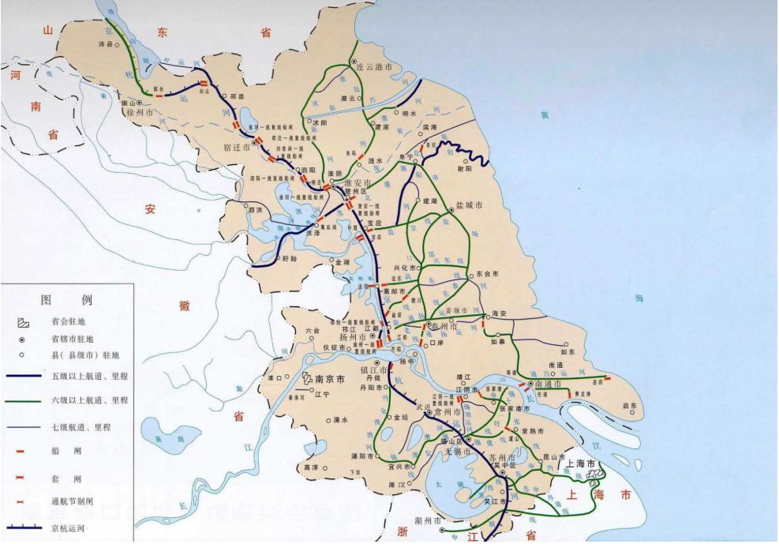

叶青疫区日记：以声控、脚控代替手控
原文链接 备份链接 非常时期，武汉成了全国人民挂念、祈福的城市。封城后，武汉人民的真实生活是什么样？ 正和岛自1月26日起特别推出《叶青：我在武汉疫区的第N天》专栏。叶青是一位定居武汉40年的市民，也是一名学者和官员。接下来的一段时间，他 …
散是十三星，聚是苏大强。
8000万江苏人，是“苏大强”最坚实的后盾。
文 | 陈星萌 陈嘉玲 田蔚琪
编辑 | 沈小山
2月7日，国家部署“一省包一市”支援湖北疫情工作，网传江苏对口支援除了武汉以后疫情最严重的孝感，随后“散装江苏”的话题也登上了热搜。
其他省：江西省对口支援随州市医疗队、浙江省援湖北荆门医疗队……


江苏省：苏州市支援武汉同济医院医疗队、启东市人民医院驰援湖北医疗队、丰县人民医院驰援湖北医疗队……但是就是没有江苏医疗队。


一时间，“内部battle”、“江苏十三太保争相驰援孝感”等话题也被网友们捧上了热搜。

就连江苏各地医疗队从哪个机场出发，都成了“散装江苏”的佐证。


不过要澄清的一点是，虽然江苏各地都派出了医疗队，但其实他们并非各自出发。
据央广网报道，2月9日下午，第五批江苏援湖北医疗队958人分别在南京禄口机场、无锡硕放机场集结，启程出征湖北。至此，江苏省已派出1438名医务工作者奔赴湖北参与疫情防控工作。
2月10日，国家卫健委公布官方配对名单，江苏对口支援黄石，而非此前网传的孝感。

然而“散装江苏”这个说法已经深入人心，并被广大网友认可。
其实，“散装江苏”调侃的背后，更多的是责任与团结。以前有多“散装”，现在就有多团结。正是“江苏十三太保”的合体，才有了如今的“苏大强”。

“苏大强”到底有多强？火神山和雷神山医院也可以告诉你。

（火神山和雷神山参与建设的部分江苏企业名单，图源微博网友瘦阿梨）
除了这些基建企业，还有很多江苏企业纷纷提供了资金援助。根据江苏省工商联数据，截至2月4日，《支援武汉抗疫参与2个医院建设的江苏民营企业》名单上的企业数已经接近三位数，江苏500多家民企累计捐赠达7.6亿元。
“散是十三星，聚是苏大强”，8000万江苏人，是苏大强最坚实的后盾。这样看来，江苏省其实很是团结，那么它“内斗大省”的名号是怎么来的呢？这背后，到底有什么解不开的结呢？
历史渊源久，分分又合合

一直以来江苏都被调侃为「大内斗省」、「宇宙苏」，而这样的称号其实也颇有历史渊源。这其中还有个著名的段子，说江苏内斗要从2000多年前，一个淮安人韩信帮助一个徐州人刘邦，打败了一个宿迁人项羽，导致另一个宿迁人虞姬殉情的故事说起。
在江苏省这块面积不到十一万的大地上，却汇聚着楚汉中原文化、吴文化、江淮文化、金陵文化等。由于南北跨度大，江苏可按照地理位置划分为黄淮、江淮和江南三个部分。在历史上，这三个地区长期分属于不同的行政单位，乃至不同的政权，再加之自然条件的差异，久而久之，自然形成了不同的文化、语言、习俗。苏南和苏北两个行政公署在我国历史上是唯一以“苏南”、“苏北”命名的权威行政区划单位，这也是现代人对于“苏南”和“苏北”概念的源头和最早的认知。
在数百年的分裂史上，扬州崛起，成为了南朝统治的核心地带。大运河的修建带动了扬州城的兴盛。扬州一度成为最富庶之地。到了清朝年间，乾隆将江苏省分设为江宁、江苏二布政使司，前者治江宁府，后者治苏州府。虽然江苏省境内有两布政使司，但统受一巡抚领导。由此可见，在这个时期，江苏省的省会实际上确实是有两个，一个南京，一个为苏州。这也拉开了南京和苏州“内斗”的序幕。

（图源：铲史官漫画）
再后来，由于种种历史因素和政治影响，南京成立特别市，镇江一度成为江苏省会。总之，自古以来，江苏并没有一个一直占据非常强势地位的中心城市，故而直至今日，人们调侃南京的省会地位，也有这层历史在。
河流水系多，地理再分割
水系，这是造成江苏“内斗”很重要的一个原因。
打开地图,你会发现长江穿过江苏省境内，把江苏一分为二，长江以南为苏南,长江以北为苏北。然而除了长江，淮河也从江苏流过, 淮河作为中国地理分区北方地区和南方地区的地理分界线，一下子就把江苏分成了南北两方。重重分割，实在容易让人分不清南北。而且，从纵向上看,大名鼎鼎的京杭大运河也从江苏流过,甚至在古代，黄河还从江苏流过。

全省有200多个湖泊, 中国五大淡水湖江苏有两个,洪泽湖和太湖。江苏省水网全国最密,18%的面积是水面。古代水面面积则更多。发达的水系把江苏分割成一块一块的，一定程度上也阻碍了沟通。
方言差异大，实在难说和
如果你问江苏话怎么说，大概所有的江苏人都会异口同声地告诉你：“没有江苏话。”
事实上，不同地区的江苏人之间交流也多是用普通话，因为他们根本听不懂对方的方言。
比如，同样夸人身体好，
用苏州话就是“砸墩”；
用淮安话就是“身体多吉杠啊！”。
完全不同的两个词，就问你能不能懂。

（江苏省方言图，来源：《中国语言地图集》(第2版)
江苏省分为三个方言区，即江淮官话区、吴语区、中原官话区。各个方言区内部则能够互通，例如吴语区内各城市之间方言互通，但吴语区城市和江淮官话区城市之间则完全不能互通。
连沟通都尚有障碍，这也难怪时不时就“打一架”了。
经济发达，“内斗”也欢乐
要说到散装的根本，到底还是经济问题。
在苏南地区，不仅苏州、无锡、南京几乎分别都“富可敌省”，许多县级市都实力强大，比如江阴、宜兴等，可能连自己所属的地级市都不怎么待见。就连常被吐槽GDP相对落后的苏北地区，放在全国可还是十分能打。

(图源21数据新闻实验室）
江苏是全国唯一所有地级市都跻身百强的省份，直接占了名单五分之一的名额，经济综合竞争力位列全国第一。综合竞争力第一是什么概念呢，江苏13个市就有实力建出9个机场。举个例子来说，江苏最穷的宿迁排名13，搁浙江排第8，搁广东能排第6，在安徽直接挤列第3。大家都挺有钱，也就谈不上谁觉得低谁一等，相反可能还互相你不服我我不服你，结果形成了正循环，各家经济都向好了。这种区域平衡群星璀璨的发展制度让江苏十三市有足够的底气“散装”。
无论如何，各种因素交织使得江苏成为今天的「宇宙苏」，但当疫情来临，人心凝结，曾经的散装也即刻集聚，能爆发出“宇宙级能量”。
参考资料：江苏地情网、中国江苏网、《江苏年鉴》、搜狐网
来源｜南都周刊
END
欢迎分享到朋友圈，如想取得授权请邮件：newmedia@nbweekly.com。如果想找到小南，可以在后台回复「小南」试试看哦~

原文链接 备份链接 非常时期，武汉成了全国人民挂念、祈福的城市。封城后，武汉人民的真实生活是什么样？ 正和岛自1月26日起特别推出《叶青：我在武汉疫区的第N天》专栏。叶青是一位定居武汉40年的市民，也是一名学者和官员。接下来的一段时间，他 …
原文链接 备份链接 点击上方蓝字 _ 关注我们 _ 非常时期，武汉成了全国人民挂念、祈福的城市。封城后，武汉人民的真实生活是什么样？ 正和岛自1月26日起特别推出《叶青：我在武汉疫区的第N天》专栏。叶青是一位定居武汉40年的市民，也是一名 …
原文链接 备份链接 很多人说，老王你有空就吹牛逼吧，于是我就写了。 一、万人，空城 广东的医疗队在2月9日晚9点左右到达机场，整个天河机场人声鼎沸，都是各省支援的医疗队伍，这对当地的统筹组织能力是个很大的考验。我们很幸运乘坐一辆公车来到酒 …
原文链接 备份链接 记者/ 李东 编辑/ 石爱华 宋建华 这是一支快速集结起来的运输车队，10辆卡车、12名司机。历经26小时，行驶1000公里，9日中午，将300吨蔬菜从河北邯郸运达了湖北赤壁。 截止2月12日6时，全国新冠肺炎确诊病 …
原文链接 备份链接 办理值机的柜台，工作人员看到湖北签发的护照，下意识地向后躲了躲，接着拿起电话，用英文说着什么。 口述 | 王丰 整理 | 吴雪 武汉市长周先旺1月26日晚在新闻发布会上说有500多万武汉人离开武汉，而我们一家三口就是 …